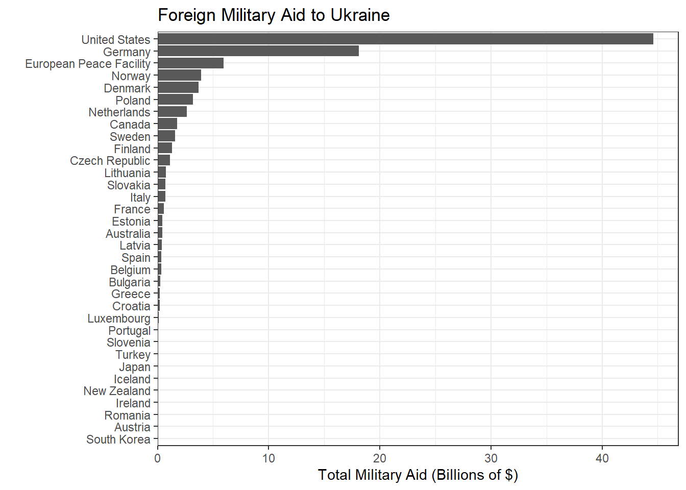

aid <- read.csv(here('data_raw','World Wide Aid.csv'))
aid1 <- aid %>%
filter(Type.of.Aid.General == "Military") %>%
select(Countries, Original.Currency,Type.of.Aid.General, Monetary.Value.as.Given.by.Source, Total, Converted.Value.in.EUR, Total.monetary.value.delivered.in.EUR, Total_in_USD) %>%
filter(Total != "") %>%
filter(Total != ".") %>%
group_by(Countries) %>%
mutate(Total_in_USD = as.double(Total_in_USD)) %>%
mutate(Total_by_Country = sum(Total_in_USD)) %>%
ungroup()
head(aid1)# A tibble: 6 × 9
Countries Original.Currency Type.of.Aid.General Monetary.Value.as.Give…¹ Total
<chr> <chr> <chr> <chr> <chr>
1 Australia AUD Military 70,000,000 70,0…
2 Australia AUD Military 21,000,000 21,0…
3 Australia AUD Military 25,000,000 25,0…
4 Australia AUD Military 49,000,000 49,0…
5 Australia AUD Military 26,500,000 26,5…
6 Australia AUD Military 26,700,000 26,7…
# ℹ abbreviated name: ¹Monetary.Value.as.Given.by.Source
# ℹ 4 more variables: Converted.Value.in.EUR <chr>,
# Total.monetary.value.delivered.in.EUR <chr>, Total_in_USD <dbl>,
# Total_by_Country <dbl>aid2 <- aid1 %>%
select(Countries, Total_by_Country) %>%
slice(1, 13, 14,28,31,56,63,91,103,113,125,131,145,149,150,157,161,165,170,189,196,206,213,221,227,237,240,242,254,258,271,284,299,307)
head(aid2)# A tibble: 6 × 2
Countries Total_by_Country
<chr> <dbl>
1 Australia 442962918.
2 Austria 3438793.
3 Belgium 324360000
4 Bulgaria 269817811.
5 Canada 1759044024.
6 Croatia 190800000 aid2_plot <- aid2 %>%
mutate(Total_by_Country = Total_by_Country / 10^9) %>%
mutate(Countries = fct_reorder(Countries, Total_by_Country)) %>%
ggplot()+
geom_col(aes(x = Total_by_Country, y = Countries)) +
labs(x = "Total Military Aid (Billions of $)", y = "", title = "Foreign Military Aid to Ukraine")+
theme_bw()+
scale_x_continuous(expand = expansion(mult = c(0, 0.05)))
aid2_plot